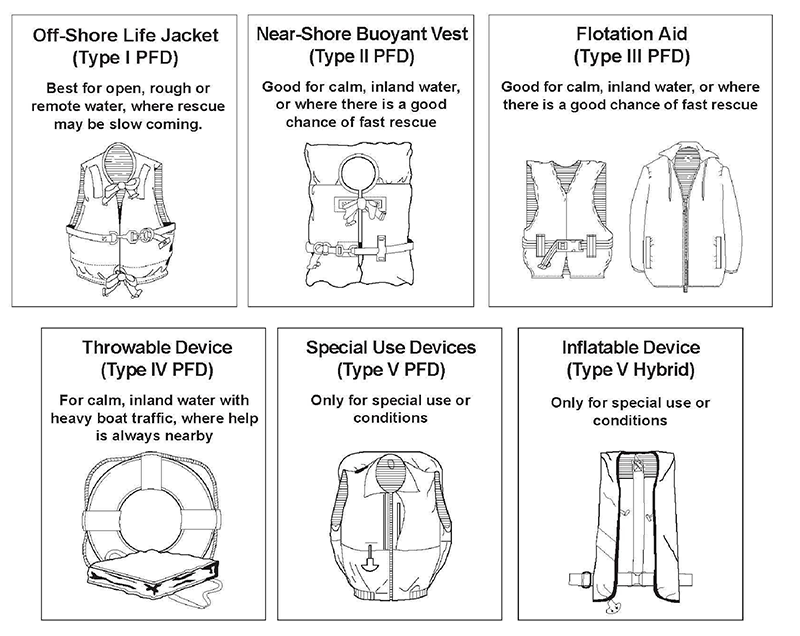

05.J Personal Flotation Devices
05.J.06–05.J.07
05.J.06 Throwable devices (Type IV PFD).
- On USCG-inspected vessels, ring buoys are required to have automatic floating electric water lights (46 CFR 160).
- On all other floating plant and shore installations, lights on life rings are required only in locations where adequate general lighting (e.g., floodlights, light stanchions) is not provided. For these plant and installations, at least one life ring, and every third one thereafter, shall have an automatic floating electric water light attached.
- All PFDs shall be equipped with retroreflective tape in accordance with USCG requirements.
- Life rings (rope attachment not required) and ring buoys (rope attachment required) shall be USCG-approved; shall have at least 90 ft (27.4 m) of 3/8 in (0.9 cm) of attached solid braid polypropylene, or equivalent. Throw bags may be used in addition to life rings or ring buoys. These throwable devices and lifelines shall be inspected at a minimum, every 6 months and shall be stored in such a manner as to allow immediate deployment and will be protected from degradation from weather and sunlight. Life rings or ring buoys shall be readily available and shall be provided at the following places:
- At least one not less than 20 in (51 cm) on each safety skiff up to 26 ft (7.9 m) in length (46 CFR 117.70);
- At least one (1) 24 in (61 cm) in diameter on all motor boats longer than 26 ft (7.9 m) in length up to 65 ft (19.8 m) in length and for motor boats 65 ft (19.8 m) in length or longer, a minimum 3 life buoys of not less than 24 in (61 cm) and one additional for each increase in length of 100 ft (30.4 m) or fraction thereof; and
- At least one (1) at intervals of not more than 200 ft (60.9 m) on pipelines, walkways, wharves, piers, bulkheads, lock walls, scaffolds, platforms, and similar structures extending over or immediately next to water, unless the fall distance to the water is more than 45 ft (13.7 m), in which case a life ring shall be used. (The length of line for life rings at these locations shall be evaluated, but the length may not be less than 90 ft (27.4 m).
FIGURE 5-1
Personal Flotation Devices

05.J.07 At navigation locks, an analysis of the benefits versus the hazards of using floating safety blocks (blocks that may be quickly pushed into the water to protect individuals who have fallen in the water from being crushed by vessels) shall be made.
- This analysis shall be documented as an AHA.
- If the use of blocks is found acceptable, consideration shall be given to the size and placement of the blocks, the appropriate means of securing and signing the blocks, etc. When the use of blocks is found unacceptable, alternative safety measures shall be developed.
{kind=link}